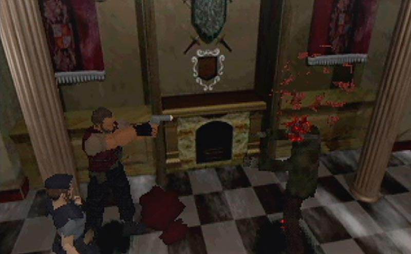
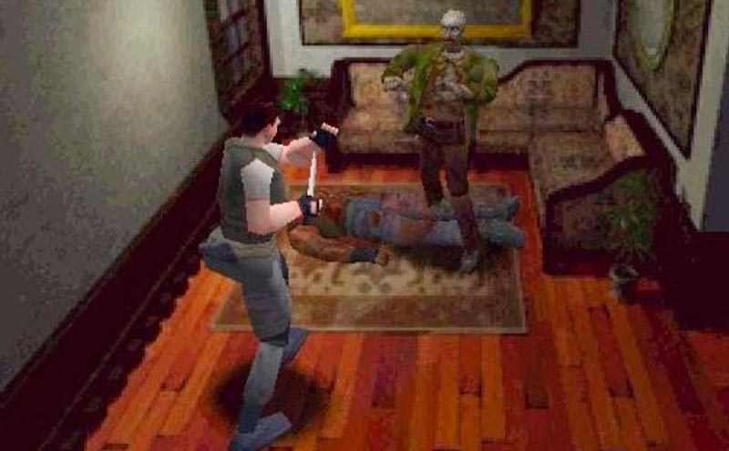

El comienzo de la pesadilla. El origen de la pandemia. Un virus letal
estaba
libre, un patógeno que hacía que los
muertos resucitaran y que los jugadores no pudieran soltar el mando de sus PlayStation a pesar del
miedo y del
incipiente sudor en las palmas de las manos. Resident Evil (PlayStation, 1996) nos abría las puertas
de la
mansión
Spencer y nos presentaba a los ahora mundialmente conocidos agentes de S.T.A.R.S: Jill Valentine y
Chris
Redfield. Su
trabajo, investigar unos extraños incidentes en las afueras de Racoon City. El resultado, un
maravilloso y
sangriento
caos. A pesar del control tipo tanque característico de la saga (en el que para modificar la dirección
del
personaje
teníamos que pararnos y rotar sobre nuestro propio eje), un tanto anquilosado actualmente y que
afortunadamente
desapareció en Resident Evil 6 (PlayStation 2 y Xbox 360, 2012), todo en Resident Evil es
sobresaliente. La
gestión del
inventario y los baúles, la súbita tranquilidad de las salas de guardado, sustos inesperados y giros
de guion,
finales
alternativos, impactantes bosses. La ambientación, digna de película de terror y acompañada de unos
gráficos
increíbles,
fue otro punto fuerte de este título con el que Capcom marcó un hito con no solo uno de los mejores
juegos de
la
historia sino con, además, el primer survival horror de una larga y fructífera estirpe. La saga ha
tenido sus
altibajos
desde entonces pero, más de dos décadas después, sigue viva y con ganas de dar guerra y provocar
escalofríos.
Solo
esperamos tener munición suficiente.